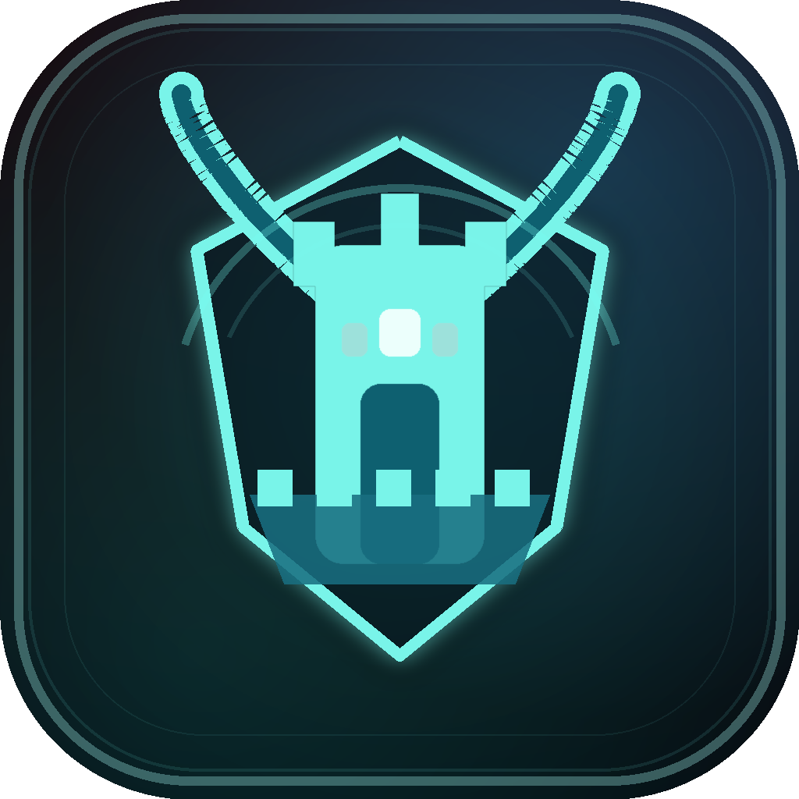
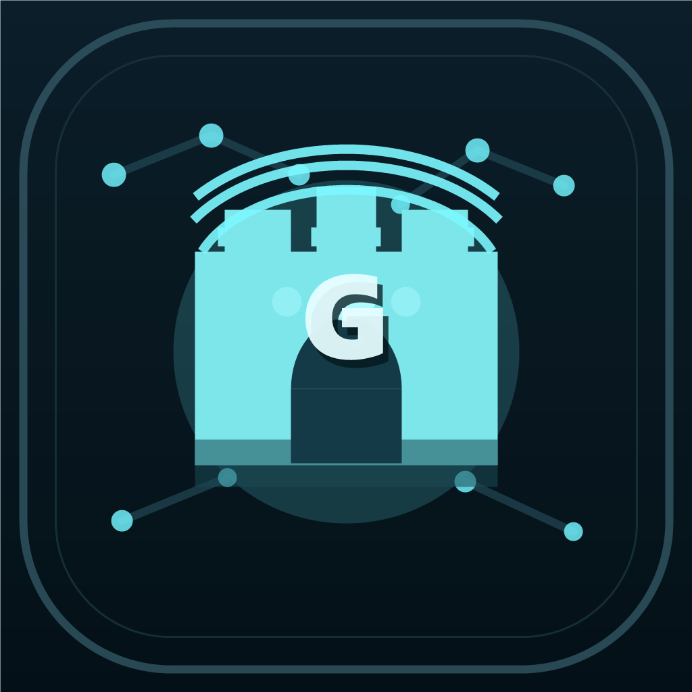
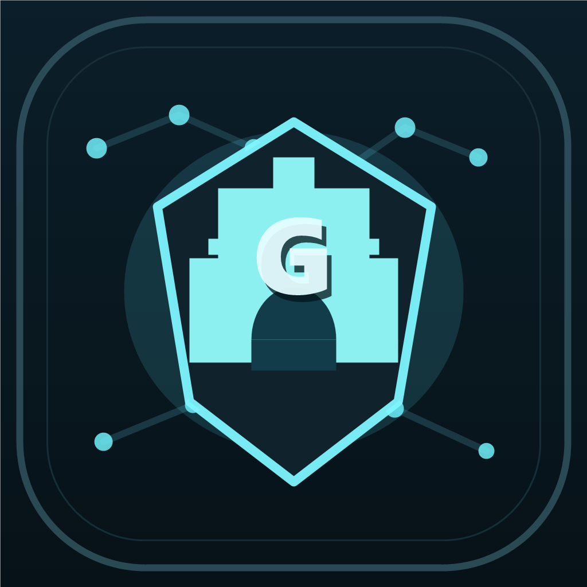
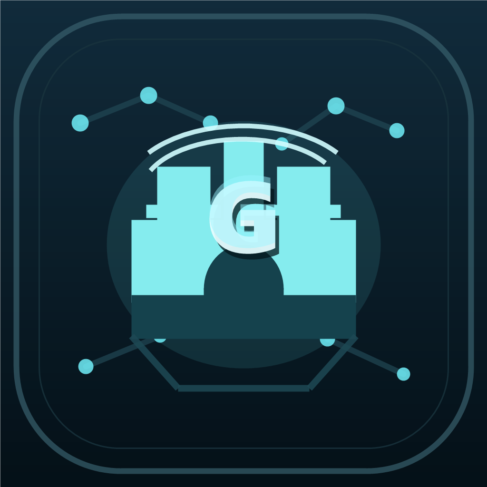

Icon Direction Review
The mobile repo is already wired to custom icon assets, but the current mark still feels busy and uneven at launcher scale. These alternatives take your new brief literally: a castle or citadel structure with a clear G integrated into the icon.
Current

64
48
32
What works: the palette is on-brand and the goat/citadel idea is present.
What hurts: the glow, horn texture, shield, and tower details all fight for priority.
A. Bastion G

64
48
32
Why it works: strongest direct read of a citadel with a visible `G` that survives icon scale.
Tradeoff: still has enough structure that the adaptive foreground cut needs to be handled carefully.
B. Keeper G

64
48
32
Why it works: the strongest “premium emblem” version of the citadel-plus-`G` idea.
Tradeoff: a little more ceremonial and badge-like than a straight app mark.
C. Night Gate

64
48
32
Why it works: broad fortress silhouette and the cleanest small-size read of the set.
Tradeoff: slightly less distinctive than A once viewed at full size.
Suggested starting point
Concept A is the best first replacement candidate because it follows your brief most directly: a citadel structure with a clear `G`, without the current icon’s visual clutter. Concept B is stronger if you want a more badge-like identity. Concept C is strongest if you want the cleanest launcher read on actual devices.